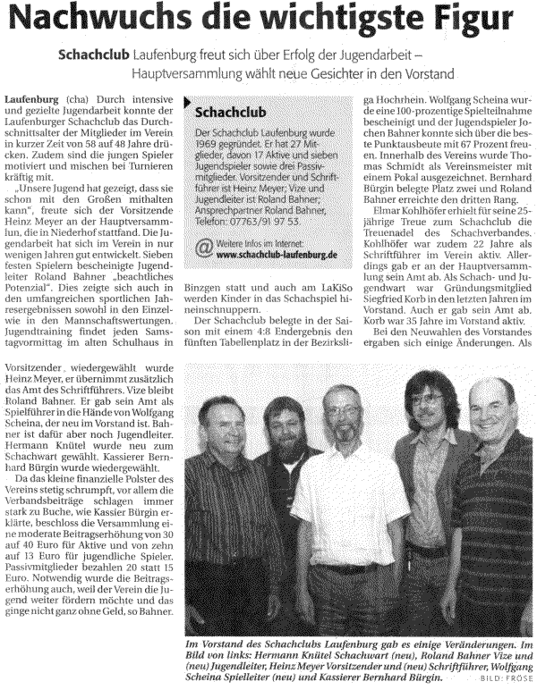
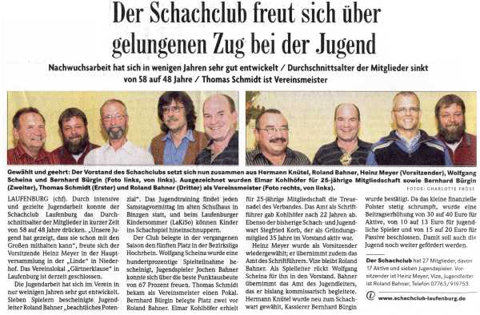

Ehrungen (von links)
Elmar Kohlhöfer erhält die Treuenadel des Verbandes für 25-jährige Mitgliedschaft
Vereinsmeisterschaft 2007: Bernhard Bürgin (2.), Dr. Thomas Schmidt (Vereinsmeister)
und Roland Bahner (3.)

Der neugewählte Vorstand (von links):
Hermann Knütel (Schachwart), Roland Bahner (2. Vorstand und Jugendleiter),
Heinz Meyer (1. Vorstand und Schriftführer), Wolfgang Scheina (Spielleiter) und
Bernhard Bürgin (Kassier)
Und so berichtete die Presse:
Südkurier vom 27.07.07:
(auf drei Spalten umgebrochen)

Badische Zeitung vom 26.07.07
(auf vier Spalten umgebrochen)

und nochmal der Südkurier vom 2.8.07: